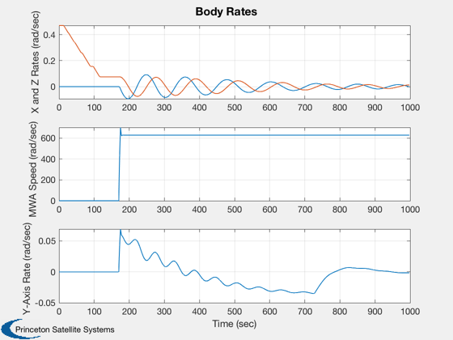
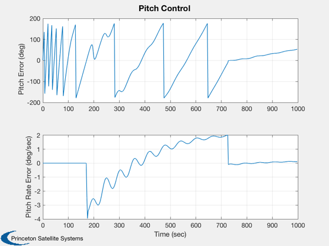
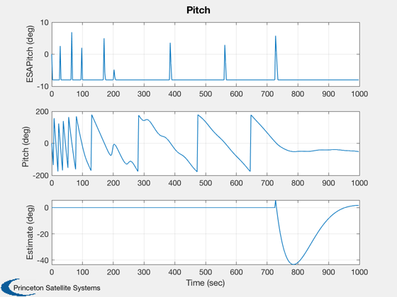
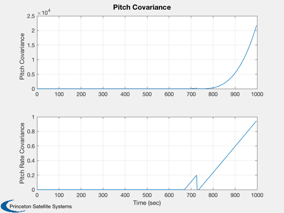
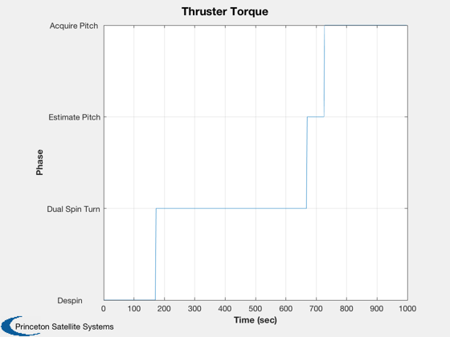
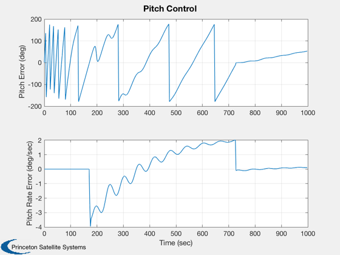
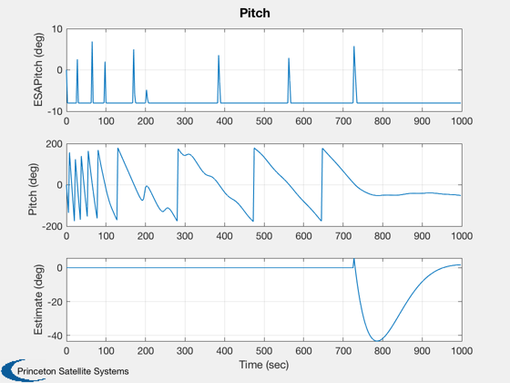
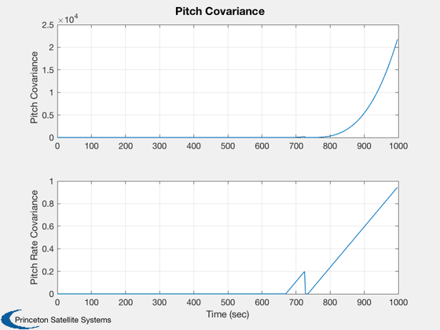
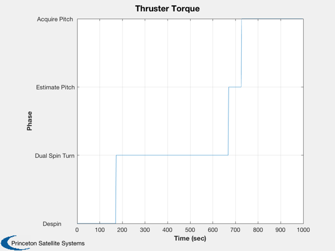

The acquisition sequence for the ComStar satellite.
Comstar is spinning in transfer orbit. When the demonstration starts it is at orbit normal. The acquisition sequence has the following phases:
1. Despin to the DST angular rate 2. DST with nutation damping 3. Pitch estimation 4. Pitch acquisition 5. Normal mode
Phases 2-4 make use of the tach loop
Since version 2. ------------------------------------------------------------------------- See also DSTCrit, PtchLoop, SSA, SpinREst, StatePrp, FGs, NPlot, ComStar, PitchEst, Q2Eul, Constant, Plot2D, TimeGUI, RK4 -------------------------------------------------------------------------
Contents
- Global for the TimeGUI
- Constants
- Database inputs
- Input parameters
- The acquisition sequence has four phases:
- Compute an acceptable spin rate prior to the dual spin turn
- Initialize the Spin rate controller
- Design the tach loop
- Get the pitch and tach loop controllers
- Set up the pitch Kalman Filter
- Design the thruster pitch controller
- The main simulation loop
- Initialize the time display
%------------------------------------------------------------------------------- % Copyright 1994-1998 Princeton Satellite Systems, Inc. All rights reserved. %-------------------------------------------------------------------------------
Global for the TimeGUI
%------------------------ global simulationAction simulationAction = ' ';
Constants
%---------- rPSToRPM = Constant('Rad/Sec to RPM'); rPMToRPS = Constant('RPM to Rad/Sec'); degToRad = Constant('Deg to Rad'); radToDeg = Constant('Rad to Deg');
Database inputs
%---------------- inrMWA = ComStar('MWA Inertia'); inr = ComStar('TO Inertia'); wMWATarg = ComStar('DST MWA Target'); uMWA = ComStar('U MWA'); uDamper = ComStar('U Damper'); cDamper = ComStar('C Damper'); inrDamper = ComStar('Damper Inertia'); invInr = inv(inr); hMWA = inrMWA*wMWATarg;
Input parameters
%----------------- w = [0;0;4.5]*rPMToRPS; nSim = 4000; nPMax = 10; dTSim = 0.25; % Control period x = [[1;0;0;0];w;0;0]; esaLimit = 8.0*degToRad;
The acquisition sequence has four phases:
%------------------------------------------ % 1. Despin to the DST angular rate % 2. DST with nutation damping % 3. Pitch estimation % 4. Pitch acquisition % 5. Normal mode % Phases 2-4 make use of the tach loop
Compute an acceptable spin rate prior to the dual spin turn
%------------------------------------------------------------
[wZMax,wZMin,wYMax] = DSTCrit(inrMWA,inr(2,2),inr(1,1),inr(3,3),hMWA);
Initialize the Spin rate controller
%------------------------------------ wC = wZMin + 0.2*(wZMax-wZMin); wY = -(wC*inr(3,3)-hMWA)/inr(2,2); phase = 'Despin'; xSpinRateEst = x(7); kSpinRateEst = 0.5; pulsewidth = 0; pulsewidthMax = 0; accelNom = -6/inr(3,3); % Need to update this wError = 0.01*rPMToRPS; fprintf('Minimum pre DST z-axis spin rate = %8.2f rpm \n',wZMin*rPSToRPM); fprintf('Maximum pre DST z-axis spin rate = %8.2f rpm \n',wZMax*rPSToRPM); fprintf('Maximum post DST y-axis spin rate = %8.2f rpm \n',wYMax*rPSToRPM); fprintf('Pre DST z-axis spin rate = %8.2f rpm \n',wC*rPSToRPM); fprintf('Post DST y-axis spin rate = %8.2f rpm \n',wY*rPSToRPM);
Minimum pre DST z-axis spin rate = 0.45 rpm Maximum pre DST z-axis spin rate = 1.80 rpm Maximum post DST y-axis spin rate = 1.80 rpm Pre DST z-axis spin rate = 0.72 rpm Post DST y-axis spin rate = -0.36 rpm
Design the tach loop
%--------------------- zeta = 0.7071; wN = 1.0; tSamp = 0.25; zetaPL = 0.7071; wNPL = 0.1; beta = 0.0; fprintf('Tach loop damping ratio = %8.2f \n', zeta); fprintf('Tach loop undamped natural freq = %8.2f rad/sec \n', wN); fprintf('Tach loop sampling period = %8.2f sec \n', tSamp); fprintf('Pitch loop damping ratio = %8.2f \n',zetaPL); fprintf('Pitch loop undamped natural freq = %8.2f rad/sec \n', wNPL);
Tach loop damping ratio = 0.71 Tach loop undamped natural freq = 1.00 rad/sec Tach loop sampling period = 0.25 sec Pitch loop damping ratio = 0.71 Pitch loop undamped natural freq = 0.10 rad/sec
Get the pitch and tach loop controllers
%---------------------------------------- [aM,bM,cM,dM,aP,bP,cP,dP] = PitchLoop(inr(2,2),inrMWA,beta,zeta,zetaPL,wN,wNPL,tSamp,'Delta');
Set up the pitch Kalman Filter
%------------------------------- pPitchEst = [pi^2 0;0 (0.1*pi/30)^2]; xPitchEst = zeros(2,1); rPitchEst = (0.01*degToRad)^2; qPitchEst = (6*0.01)^2; % in-lbf 1 percent thruster torque uncertainty esaPitchValid = 8*degToRad; covarianceThreshold = 4.0;
Design the thruster pitch controller
%------------------------------------- zetaTPL = 0.7071; wNTPL = 0.02; fprintf('Thruster Pitch loop damping ratio = %8.2f \n',zetaTPL); fprintf('Thruster Pitch loop undamped natural freq = %8.2f rad/sec \n', wNTPL); kTPL = inr(2,2)*wNTPL^2; tauTPL = 2*zetaTPL/wNTPL; pitchThreshold = 4*degToRad;
Thruster Pitch loop damping ratio = 0.71 Thruster Pitch loop undamped natural freq = 0.02 rad/sec
The main simulation loop
%------------------------- nPlot = nSim/nPMax; xPlot = zeros(9,nPlot); xPlotEst = zeros(1,nPlot); esaPitchPlot = zeros(1,nPlot); phasePlot = zeros(1,nPlot); tPlot = zeros(1,nPlot); xPlotPitchEst = zeros(2,nPlot); pPlotPitchEst = zeros(2,nPlot); thrusterPlot = zeros(3,nPlot); plotPitch = zeros(1,nPlot); t = 0; nP = 0; kP = 0; uSun = [1;0;0]; uSunBodyOld = uSun; TLast = -1; T = 2*pi/x(7); tThruster = [0;0;0]; pitchSat = 0; e = [0;0;0]; pulseLeft = 0; phases = ['Despin ';... 'Dual Spin Turn';... 'Estimate Pitch';... 'Acquire Pitch '];
Initialize the time display
%---------------------------- tToGoMem.lastJD = 0; tToGoMem.lastStepsDone = 0; tToGoMem.kAve = 0; [ ratioRealTime, tToGoMem ] = TimeGUI( nSim, 0, tToGoMem, 0, dTSim, 'ComStarAcq' ); for k = 1:nSim; % Display the status message %--------------------------- [ ratioRealTime, tToGoMem ] = TimeGUI( nSim, k, tToGoMem, ratioRealTime, dTSim ); % Sun sensor %----------- [cEP,dTCEP,uSunBodyOld] = SSA(x(1:4),uSun,uSunBodyOld,dTSim); % The gyro % -------- yawRate = x(7); % The tachometer % -------------- wSpeed = x(8); % Earth sensor %------------- e = Q2Eul(x(1:4),e); pitch = -e(3); if abs(pitch) > esaLimit & pitchSat == 0, esaPitch = sign(pitch)*esaLimit; pitchSat = 1; elseif abs(pitch) < esaLimit, esaPitch = pitch; pitchSat = 0; end % Store plot data %---------------- if nP == 0, kP = kP + 1; xPlot(:,kP) = x; tPlot(kP) = t; xPlotEst(kP) = xSpinRateEst; xPlotPitchEst(:,kP) = xPitchEst; pPlotPitchEst(:,kP) = [pPitchEst(1,1);pPitchEst(2,2)]; thrusterPlot (:,kP) = tThruster; esaPitchPlot(kP) = esaPitch; plotPitch(kP) = pitch; if ( strcmp(phase,'Despin' ) == 1 ), phasePlot(kP) = 1; elseif ( strcmp(phase,'Dual Spin Turn') == 1 ), phasePlot(kP) = 2; elseif ( strcmp(phase,'Estimate Pitch') == 1 ), phasePlot(kP) = 3; else phasePlot(kP) = 4; end nP = nPMax - 1; else nP = nP - 1; end %----------------------------------- % The controller %----------------------------------- % Phase transition control %------------------------- if( strcmp(phase,'Despin') == 1 ) if( abs(xSpinRateEst - wC) < wError ) phase = 'Dual Spin Turn'; xTachLoop = 0; wYawOld = yawRate; wYawMax = 0; wNutLimit = 2*degToRad; end elseif( strcmp(phase,'Dual Spin Turn') == 1 ) wYawMax = max(wYawMax,abs(yawRate)); if yawRate*wYawOld < 0, if wYawMax < wNutLimit, phase = 'Estimate Pitch'; end wYawMax = 0; end wYawOld = yawRate; elseif ( strcmp(phase,'Estimate Pitch') == 1 ), if( pPitchEst(1,1) < covarianceThreshold ), phase = 'Acquire Pitch'; end end % Control System %--------------- if( strcmp(phase,'Despin') == 1 ) tMWA = 0; if( cEP == 1 ) if( TLast ~= -1 ) T = t - dTCEP - TLast; xSpinRateEst = SpinREst(accelNom, kSpinRateEst, xSpinRateEst, T, pulsewidth); pulsewidthMax = abs(2*pi/xSpinRateEst); rateError = wC-xSpinRateEst; pulsewidth = min(pulsewidthMax,abs(rateError/accelNom)); tThruster = sign(rateError)*[0;0;6]; pulseLeft = pulsewidth - dTSim; end TLast = t - dTCEP; else pulseLeft = pulseLeft - dTSim; end if ( pulseLeft < 0), tThruster = [0;0;0]; end elseif ( strcmp(phase,'Dual Spin Turn') == 1 ), wSDemand = wMWATarg; elseif ( strcmp(phase,'Estimate Pitch') == 1 ), [xPitchEst,pPitchEst] = PitchEst(xPitchEst,pPitchEst,dTSim,inr(2,2),qPitchEst,rPitchEst,... tThruster(2),esaPitch,esaPitchValid); elseif ( strcmp(phase,'Acquire Pitch') == 1 ), tThruster = [0;-kTPL*(tauTPL*xPitchEst(2) + xPitchEst(1));0]; [xPitchEst,pPitchEst] = PitchEst(xPitchEst,pPitchEst,dTSim,inr(2,2),qPitchEst,rPitchEst,... tThruster(2),esaPitch,esaPitchValid); end % Tach loop %---------- if (strcmp(phase,'Despin') == 0), [tMWA,xTachLoop] = StatePrp(aM,bM,cM,dM,xTachLoop,[wSpeed; wSDemand],'Delta'); else tMWA = 0; end %----------------------------------- % The simulation %----------------------------------- x = RK4(@FGs,x,dTSim,t,inr,invInr,tThruster,[inrMWA inrDamper],[uMWA uDamper],[tMWA 0],[0 cDamper]); t = t + dTSim; % Time control %------------- switch simulationAction case 'pause' pause simulationAction = ' '; case 'stop' return; case 'plot' break; end end j = 1:kP; tPlot = tPlot(j); Plot2D(tPlot,xPlot(5:8,j),'Time (sec)',['X and Z Rates (rad/sec)';... 'MWA Speed (rad/sec) '; 'Y-Axis Rate (rad/sec) '],'Body Rates',... 'lin',['[1,3]';'4 ';'2 ']); Plot2D(tPlot,xPlotEst(j)-xPlot(7,j),'Time (sec)',... 'Spin Rate Estimator error (rad/sec)','Estimator'); Plot2D(tPlot,[xPlotPitchEst(1,j)-plotPitch(j);xPlotPitchEst(2,j)-xPlot(6,j)]*radToDeg,... 'Time (sec)', ['Pitch Error (deg) ';... 'Pitch Rate Error (deg/sec)'],'Pitch Control'); Plot2D(tPlot,[esaPitchPlot(j);plotPitch(j);xPlotPitchEst(1,j)]*radToDeg,... 'Time (sec)', ['ESAPitch (deg)'; 'Pitch (deg) '; 'Estimate (deg)'],'Pitch'); Plot2D(tPlot,pPlotPitchEst(1:2,j),'Time (sec)', ['Pitch Covariance ';... 'Pitch Rate Covariance'],'Pitch Covariance'); Plot2D(tPlot,thrusterPlot(:,j),'Time (sec)','Thruster torque (inlb)','Thruster Torque'); NPlot(phases,phasePlot(j),tPlot,'Time (sec)','Phase') TimeGUI('close'); %-------------------------------------- % PSS internal file version information %-------------------------------------- % $Date$ % $Id: 48b8eb62ae3deb788e31d71166037503c90efd57 $
    
   